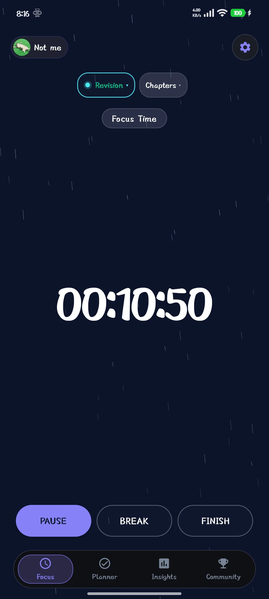
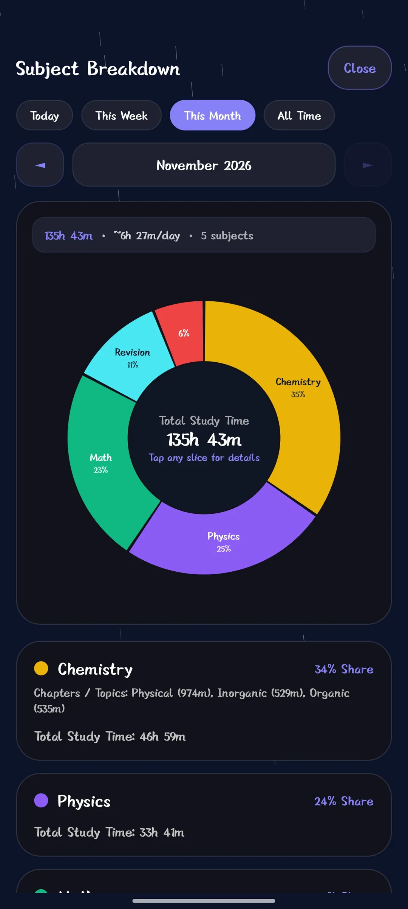
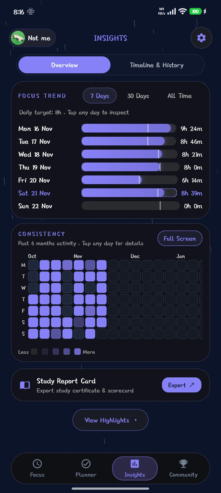
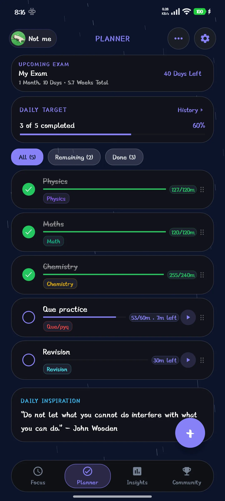
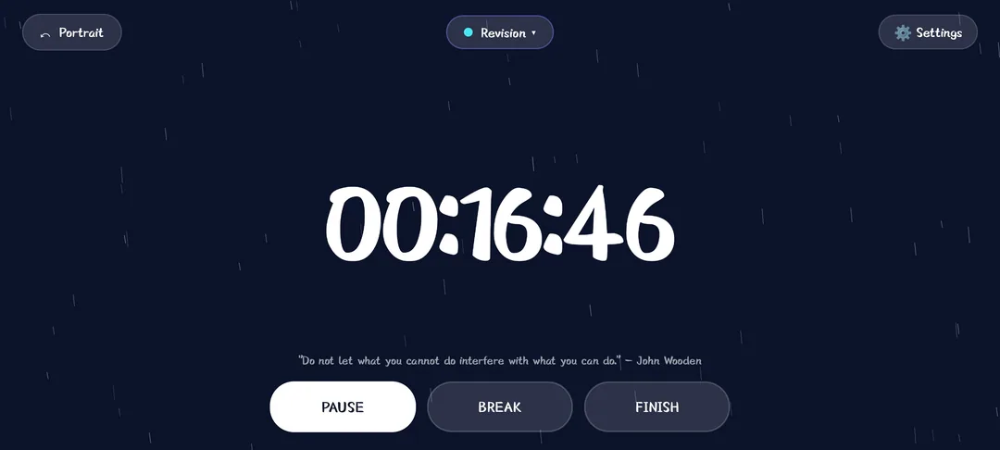
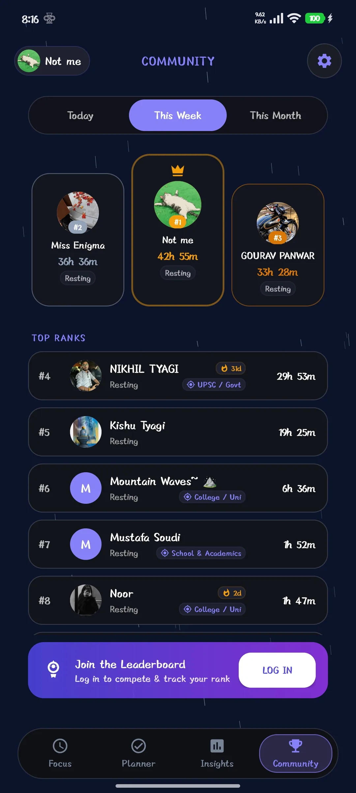

Free Pomodoro Timer & Study Tracker. Crush your daily goals.
Track subject-wise study hours, run Pomodoro sessions, and build daily streaks — 100% free, offline-first, and zero ads.

Three steps, that's it.
No complicated setup. Open the app, start studying.
Start a timer
Set 25 minutes, pick your subject, press go. That's your whole setup.
Turn to Desk Clock
Flip your phone sideways for an ambient full-screen clock while you study with your books.
See your progress
Your streak, hours, and subjects are all saved automatically. Zero manual logging.
Everything a student needs.
No subscription required. All of this is completely free.
Focus Timer
Start focused study sessions with custom countdown or stopwatch modes. No distractions, just you and your books.
Subject-Wise Analytics & Graphs
Track custom subjects like Mathematics, Physics, Chemistry, and Mock Tests. Visualize your distribution with daily study bar graphs and subject-wise pie charts.

Daily Streaks & Consistency Calendar
Build momentum with an interactive monthly streak calendar and deep consistency analytics. Every completed study session builds your habit chain.

Daily Goals & Targets
Set daily target study hours and actionable checklists. Plan your day with clarity, track completion status, and crush your milestones.

Landscape Desk Clock
Rotate your device horizontally for a glowing ambient desk display with calm dimming for zero eye strain.

Competitive Student Leaderboard
Study alongside peers across the globe. See who is currently focusing and climb daily, weekly, and monthly ranks with healthy motivation.

Works Offline & Ad-Free
No Wi-Fi? No problem. Everything saves locally to your phone. Zero advertisements, zero paywalls, zero battery drain.
Frequently asked questions.
Ready to actually study?
Download StudyTimer free today. No sign-up required.
APK install · No Play Store needed · Works offline